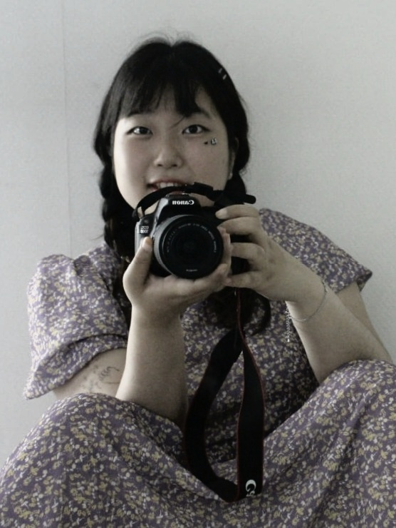
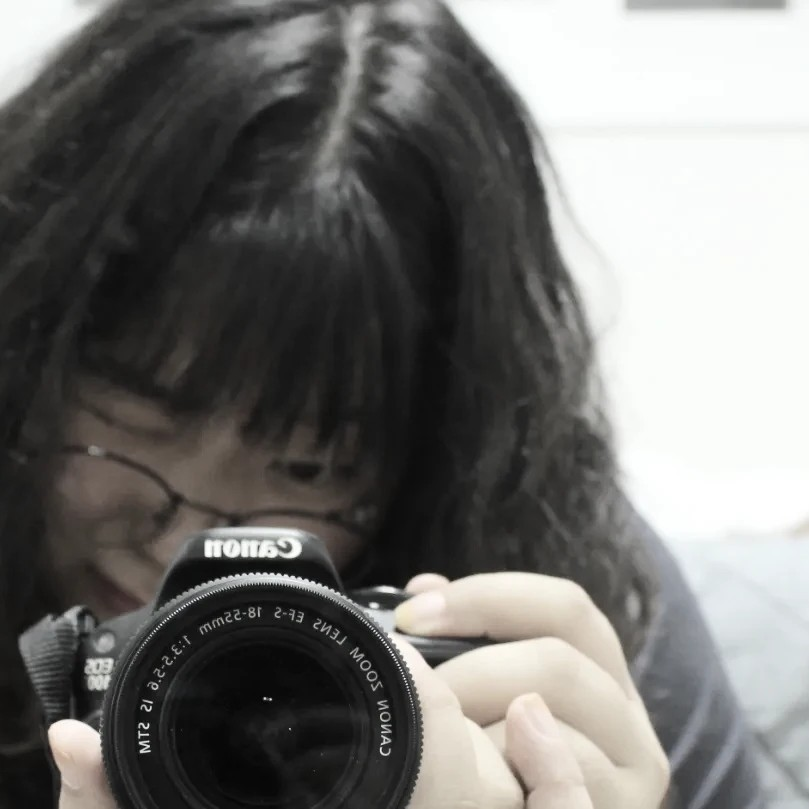
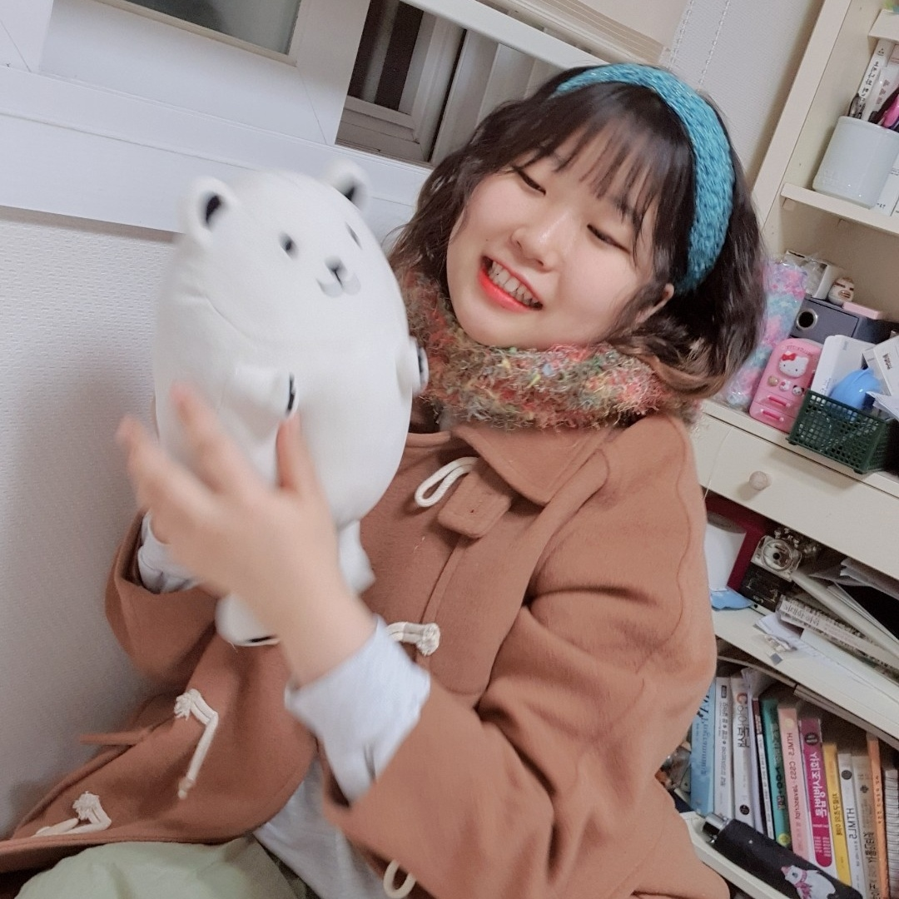
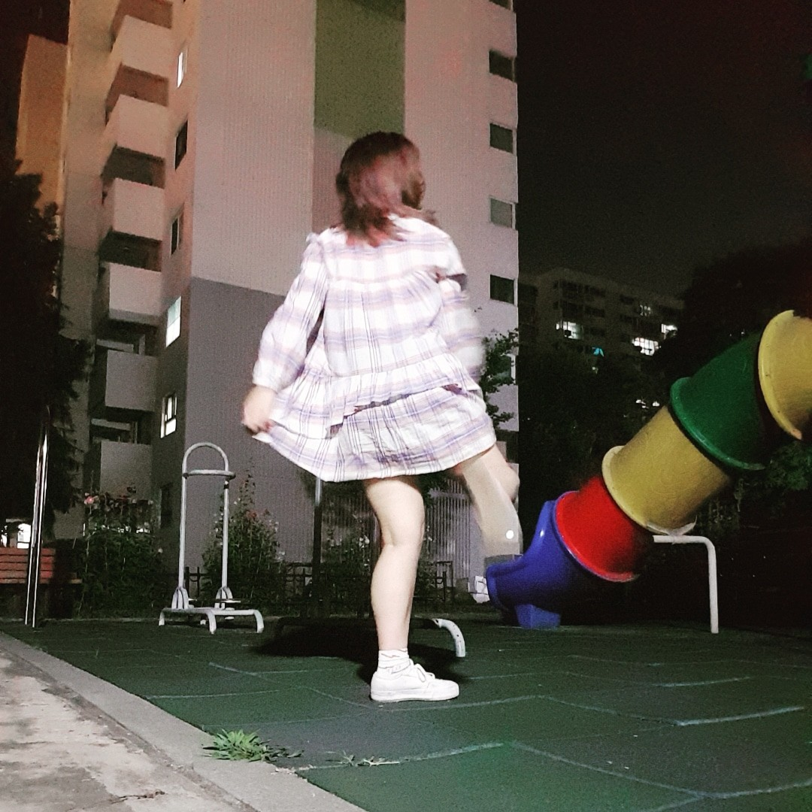
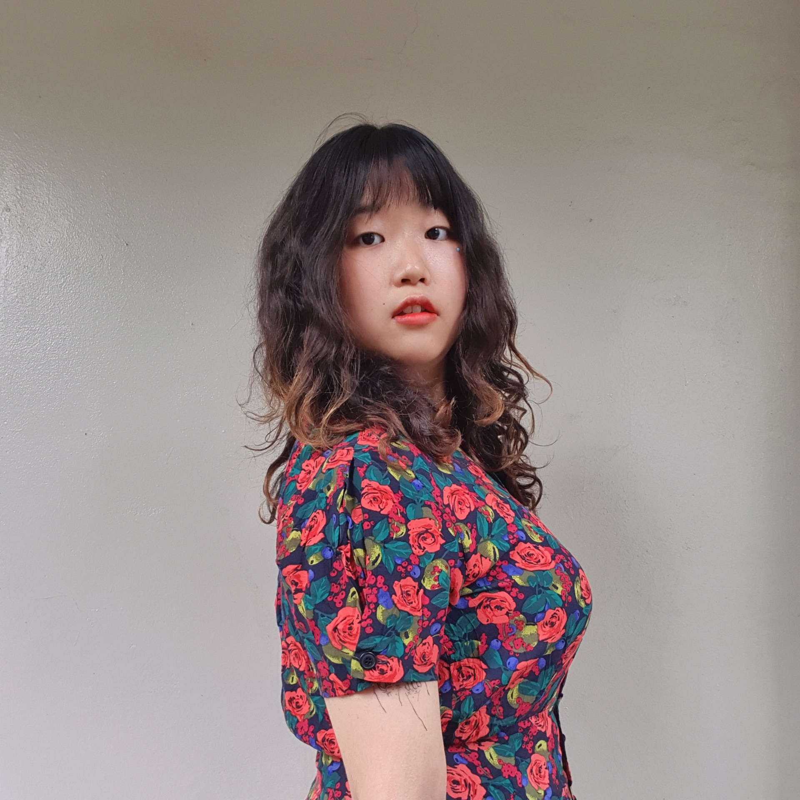

Jaeseo Yook
육재서의 잡동사니연구소
My Traces
About
안녕하세요, 육재서입니다. 사람을 좋아하고, 사진을 좋아하고, 일을 좋아하고, 사랑을 하는 것이 보람입니다.저는 일과 삶이 유기적으로 연결된 삶을 추구합니다. 쉴 땐 쉬고 놀 땐 놀되, 일 또한 나의 삶을 구성하는 중요한 일부라고 믿습니다. 따라서 일을 하다가 가슴 뭉클해지고, 더 열심히 살고자 하는 동력이 생기는 순간을 믿습니다. 저의 동료가 된다면, 조금 더 솔직하고 진실된 동료관계를 맺을 수 있을 거라 생각합니다.
favorite
hobby
1st major
2nd major
2018.3. ~ 성공회대학교 IT융합자율학부 재학
2019.1. ~ 2020.11. 동아시아평화학회 '사이' 창립 및 학회장
2021.1. ~ 2021.12. 글모임 '대자와' 멤버
2021.1. ~ 2021.12. 제36대 성공회대학교 총학생회 비상대책위원회 기획국
2021.3. ~ 사회적협동조합 '빠띠(Parti)' 공론장 활동가 커뮤니티 활동
2022.1. ~ 2022.7. 중고등대안학교 더불어가는배움터길 길잡이교사(연구교사)
My Reputation
"미래가 기대되는 이" 곽민진
네가 나중에 뭐를 하고 있을지 궁금하더라. 보통 그런 생각이 떠오르는 사람이 없거든. 근데(그런데) 너는 뭔가 글이란 매체로 표현하고 그런 삶을 살 것 같아서 (...) 상상을 해봤지.

"투명하고 예리함" 은승채
너의 투명하고 솔직한 모습에 감탄하고 동경해.

"상상도 못할만큼 멋있어" 박상은
질문과 고마움을 전하는 일은 자신을 사랑하는 일이기도 하고, 그럴 수 있는 힘을 가진 재서가 당당히 살아낼 하루들을 감히 확신해.

"내밀하고 따뜻함" 최새연
언제 어디서든 든든한 내 편이 되어주는 친구에요. 우리 둘다 하고 싶은 게 많아 재서와 얘기하다 보면 나도 모르게 뭐든 할 수 있을 거 같은 자신감이 생겨요. 세상의 기준으로 보지 않으려고 하는 내밀하고 따뜻한 시선을 가진 사람!